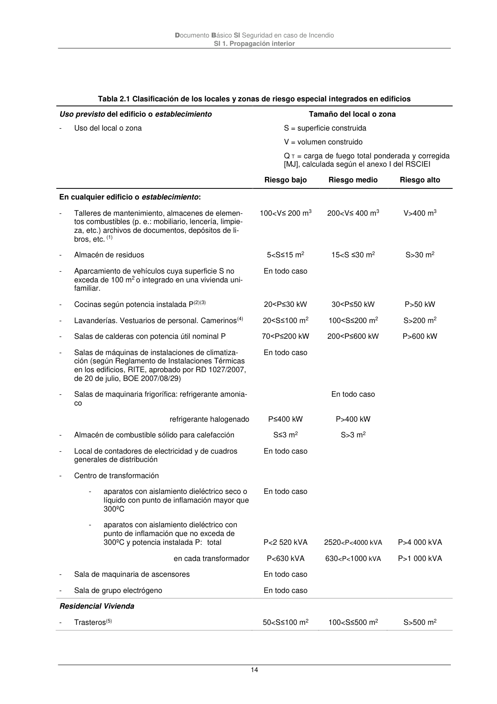

DB-SI · 2 Locales y zonas de riesgo especial · versión 2025-03-04 · capa oficial
Formatos: JSON compacto · Markdown · PDF fuente
Ámbito del documento · texto del ámbito · documento y tablas
ID técnico a0033 · PDF pág. 13-15 · jerarquía no validada por persona · contrastado con el literal de la página 13 (marcador PDF); no validado por persona · padre: a0032
Locales y zonas de riesgo especial 1 Los locales y zonas de riesgo especial integrados en los edificios se clasifican conforme los grados de riesgo alto, medio y bajo según los criterios que se establecen en la tabla 2.1. Los locales y las zonas así clasificados deben cumplir las condiciones que se establecen en la tabla 2.2. 2 Los locales destinados a albergar instalaciones y equipos regulados por reglamentos específicos, tales como transformadores, maquinaria de aparatos elevadores, calderas, depósitos de combusti- ble, contadores de gas o electricidad, etc. se rigen, además, por las condiciones que se establecen en dichos reglamentos.Las condiciones de ventilación de los locales y de los equipos exigidas por dicha reglamentación deberán solucionarse de forma compatible con las de compartimentación esta- blecidas en este DB. A los efectos de este DB se excluyen los equipos situados en las cubiertas de los edificios, aunque estén protegidos mediante elementos de cobertura. Documento Básico SI Seguridad en caso de Incendio SI 1. Propagación interior 14 Tabla 2.1 Clasificación de los locales y zonas de riesgo especial integrados en edificios Uso previsto del edificio o establecimiento - Uso del local o zona Tamaño del local o zona S = superficie construida V = volumen construido Q T = carga de fuego total ponderada y corregida [MJ], calculada según el anexo I del RSCIEI Riesgo bajo Riesgo medio Riesgo alto En cualquier edificio o establecimiento: - Talleres de mantenimiento, almacenes de elemen- tos combustibles (p. e.: mobiliario, lencería, limpie- za, etc.) archivos de documentos, depósitos de li- bros, etc. (1) 100<V≤ 200 m3 200<V≤ 400 m3 V>400 m3 - Almacén de residuos 5<S≤15 m2 15<S ≤30 m2 S>30 m2 - Aparcamiento de vehículos cuya superficie S no exceda de 100 m2 o integrado en una vivienda uni- familiar. En todo caso - Cocinas según potencia instalada P(2)(3) 20<P≤30 kW 30<P≤50 kW P>50 kW - Lavanderías. Vestuarios de personal. Camerinos(4) 20<S≤100 m2 100<S≤200 m2 S>200 m2 - Salas de calderas con potencia útil nominal P 70<P≤200 kW 200<P≤600 kW P>600 kW - Salas de máquinas de instalaciones de climatiza- ción (según Reglamento de Instalaciones Térmicas en los edificios, RITE, aprobado por RD 1027/2007, de 20 de julio, BOE 2007/08/29) En todo caso - Salas de maquinaria frigorífica: refrigerante amonia- co En todo caso refrigerante halogenado P≤400 kW P>400 kW - Almacén de combustible sólido para calefacción S≤3 m2 S>3 m2 - Local de contadores de electricidad y de cuadros generales de distribución En todo caso - Centro de transformación - aparatos con aislamiento dieléctrico seco o líquido con punto de inflamación mayor que 300ºC En todo caso - aparatos con aislamiento dieléctrico con punto de inflamación que no exceda de 300ºC y potencia instalada P: total P<2 520 kVA 2520<P<4000 kVA P>4 000 kVA en cada transformador P<630 kVA 630<P<1000 kVA P>1 000 kVA - Sala de maquinaria de ascensores En todo caso - Sala de grupo electrógeno En todo caso Residencial Vivienda - Trasteros(5) 50<S≤100 m2 100<S≤500 m2 S>500 m2 Documento Básico SI Seguridad en caso de Incendio SI 1. Propagación interior 15
1 referencias con forma DB se han ocultado por no cumplir la sintaxis oficial; la lista original sigue en el JSON.


PDF fuente redistribuible: copia fiel enlazada en esta página (SHA256 verificado).